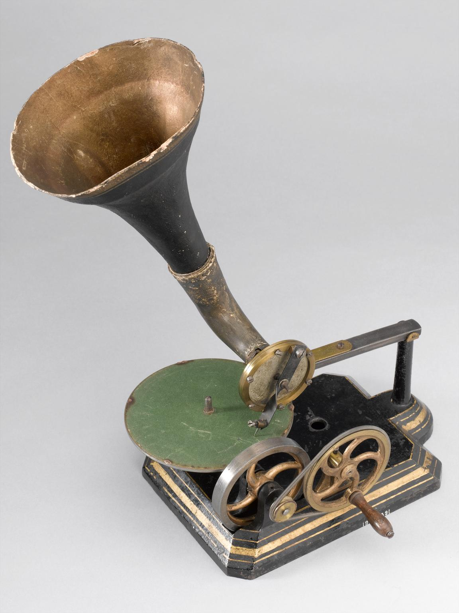

Od usmenog predanja do današnje scene
Historija sevdalinke
Pjesma koja se stoljećima prenosi, bilježi i iznova izvodi.
Osmansko doba
Pjesma iz gradske sredine
Sevdalinka se razvijala kroz susret južnoslavenske usmene poezije i muzičkih utjecaja iz vremena Osmanskog Carstva. Njene teme često su vezane za gradski život: ljubavne susrete, porodične odnose, rastanke i svakodnevne običaje.
Prenosila se slušanjem i pamćenjem. Pjesma zato nije uvijek imala jedan nepromjenjiv tekst; stihovi i melodija mogli su se razlikovati od izvođača do izvođača. Za mnoge stare pjesme autor nije poznat.
19. stoljeće
Pjesme ulaze u zbirke
Uz usmeno prenošenje, važnu ulogu počinju imati štampane pjesmarice i notni zapisi. Sakupljači bilježe ono što čuju od pjevača i tako čuvaju pjesme koje bi se mogle izgubiti.
Zapis teksta čuva riječi, a notni zapis melodiju. Ipak, nijedan od njih ne može potpuno prenijeti boju glasa, male promjene tempa i način na koji određeni pjevač ukrašava melodiju.
Kraj 19. stoljeća
Harmonika dobija svoje mjesto
U austrougarskom periodu harmonika se sve više povezuje s izvođenjem sevdalinke. Njen dolazak nije izbrisao saz ili pjevanje bez pratnje, nego je proširio načine na koje se pjesma mogla čuti.
Desna ruka može voditi melodiju, a lijeva dati bas i akorde. Takva pratnja omogućila je jednom sviraču da podrži pjevača i odsvira uvode i prijelaze između strofa.
1893.
Ludvík Kuba bilježi pjesme
Češki slikar, muzičar i istraživač Ludvík Kuba tokom boravka u Bosni i Hercegovini sakupljao je narodne napjeve. Građa iz 1893. kasnije je objavljivana u Glasniku Zemaljskog muzeja.
Njegova zbirka „Pjesme i napjevi iz Bosne i Hercegovine“ važna je za proučavanje narodne muzike. Ne sadrži samo sevdalinke, nego širi pogled na muzičku tradiciju prostora kojim je putovao.
1907.
Glas ostaje na snimku
Među ranim komercijalnim snimcima iz Sarajeva su zapisi koje je napravio Franz Hampe. Gramofonska ploča omogućila je da se ista izvedba ponovo sluša, sa sačuvanim glasom i pratnjom.
Snimci su danas vrijedan izvor za istraživače. Mogu ih porediti s kasnijim izvedbama i pratiti kako su se mijenjali melodija, tempo, način pjevanja i sastav instrumenata.

Primjer gramofona iz oko 1890. godine.
Od 1945.
Sevdalinka na Radiju Sarajevo
Radio Sarajevo počelo je s radom 1945. godine i postalo jedno od važnih središta izvođenja i snimanja sevdalinke. Pjesme više nisu slušali samo ljudi okupljeni na jednom mjestu: radijski program prenosio ih je u domove širom zemlje.
Zaim Imamović, Nada Mamula, Himzo Polovina, Safet Isović i Beba Selimović među glasovima su koje je publika upoznavala putem radija. Uz njih su važan dio zvuka stvarali harmonikaši i orkestarski muzičari.
Druga polovina 20. stoljeća
Ploče, festivali i televizija
Radijske snimke prate izdanja na pločama, koncertni nastupi i televizijske emisije. Pjevači postaju prepoznatljivi daleko izvan sredina iz kojih dolaze, a publika njihove izvedbe pamti i prenosi dalje.
Razvijaju se različiti aranžmani. Uz glas i harmoniku pojavljuju se i veći sastavi, pa se isti naslov može čuti u intimnoj izvedbi ili uz puni orkestar.
21. stoljeće
Nove generacije i novi pristupi
Amira Medunjanin, Damir Imamović, Divanhana i drugi izvođači nastavljaju raditi sa starim repertoarom. Koncerti, albumi i internet omogućavaju da ove pjesme čuje i publika koja ne govori njihov jezik.
Savremene izvedbe mogu zadržati osnovnu melodiju i stihove, a promijeniti pratnju ili tempo. Pored tradicionalnih pjesama, na repertoaru se nalaze i nova autorska djela.
2024.
Sevdalinka na UNESCO-ovoj listi
Sevdalinka je 2024. godine upisana na UNESCO-ovu Reprezentativnu listu nematerijalne kulturne baštine čovječanstva. Priznanje se odnosi na tradiciju pjevanja, njeno prenošenje i mjesto u životu zajednice.
Baština se nastavlja kroz porodice, muzičare, radionice, škole i javne nastupe. Njeno čuvanje uključuje i stare snimke i mogućnost da nove generacije uče i stvaraju vlastite izvedbe.
Zanimljivosti
Više od jednog načina pjevanja
Pjesma može imati autora
Sevdalinka se često povezuje s narodnom pjesmom, ali izvođači pjevaju i autorska djela. „Emina“ nosi stihove Alekse Šantića, a pjesmu o Višegradu napisao je Dragiša Nedović.
Jedan naslov, više verzija
Različite riječi u dvije izvedbe ne znače uvijek da je neko pogriješio. Usmeno prenošenje ostavilo je različite verzije, koje su kasnije sačuvali zapisi i snimci.
Književnost postaje muzika
„Kraj tanana šadrvana“ povezana je s pjesmom „Der Asra“ Heinricha Heinea. Prijevod i pjevanje približili su književni tekst novoj publici.